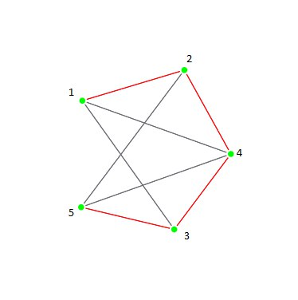

|
Возможные варианты следующей вершины: 1, 2, 3, 4, 5 Текущее частичное решение: { } |
Возможные варианты следующей вершины: 2, 3, 4 Текущее частичное решение: { 1 } |
||
|
Возможные варианты следующей вершины: 4, 5 Текущее частичное решение: { 1, 2 } |
Возможные варианты следующей вершины: 3, 5 Текущее частичное решение: { 1, 2, 4 } |
||
|
Возможные варианты следующей вершины: 5 Текущее частичное решение: { 1, 2, 4, 3 } |
 |
Возможные варианты следующей вершины: Текущее частичное решение: { 1, 2, 4, 3, 5 } |
|
|
Возможные варианты следующей вершины: Текущее частичное решение: { 1, 2, 4, 3 } |
Возможные варианты следующей вершины: 5 Текущее частичное решение: { 1, 2, 4 } |
||
|
Возможные варианты следующей вершины: 3 Текущее частичное решение: { 1, 2, 4, 5 } |
Возможные варианты следующей вершины: 1 Текущее частичное решение: { 1, 2, 4, 5, 3 } |
||
|
Гамильтонов цикл построен: 1 - 2 - 4 - 5 - 3 - 1 |
Функция Hamiltonian Начало
G(V, E) // заданный граф
used[] // массив отвечающий за состояние вершины (входит ли в частичное решение)
Stack // стек, хранящий вершины частного решения
Partial_used[V][] // Массив для запоминания ранее посещенных вершин частичного решения
Для каждой вершины v из V
used[v] = false
// Так как мы строим цикл нам не важно с какой вершины начать
cur_vertex = random(V)
Stack.push(cur_vertex)
used[cur_vertex] = true
Пока Stack не пуст выполнять:
Если |Stack| == |V| и cur_vertex смежна с начальной вершиной
//Гамильтонов цикл существует
Вернуть Stack // В нем и хранится последовательно наш цикл
cur_vertex = Stack.top()
Цикл по всем всем вершинам v смежным с cur_vertex:
Если used[v] == false && v not in Partial_used[cur_vertex]
// v не является участником частичного решения
// и еще не была попробована в качестве дополнения текущего частичного решения
used[v] = true
Partial_used[cur_vertex].push(v)
Stack.push(v)
Прервать цикл
Конец цикла
Если не подошла ни одна вершина смежная с cur_vertex
Stack.pop()
Partial[cur_vertex] = []
Конец пока
//Стек пуст, гамильтонова пути не существует
Вернуть Stack
Конец Hamiltonian